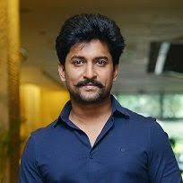
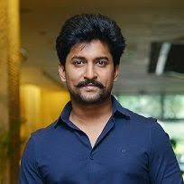

Konidala Pawan Kalyan (born Konidala Kalyan Babu; 2 September 1971[a]) is an Indian politician and actor who has been serving as the 10th deputy chief minister of Andhra Pradesh since June 2024. He is also serving as the Minister of Panchayat Raj, Rural Development & Rural Water Supply; Environment, Forests, Science & Technology in the Government of Andhra Pradesh. He is the founder and president of the Jana Sena Party. As an actor, Kalyan primarily works in Telugu cinema and is known for his unique style and mannerisms. He has a huge fan base[3] and is one of the highest-paid actors of Indian cinema. He has been featured in Forbes India's Celebrity 100 list multiple times since 2013. Kalyan is the recipient of a Filmfare Award South and a SIIMA Award among other accolades. Kalyan made his acting debut in the 1996 film Akkada Ammayi Ikkada Abbayi, but rose to prominence with the dramas Gokulamlo Seeta (1997) and Suswagatham (1998). He achieved stardom for his performance in Tholi Prema (1998), which won the National Film Award for Best Feature Film in Telugu that year. Kalyan established himself as a leading actor with successful projects such as Thammudu (1999), Badri (2000), Kushi (2001), Jalsa (2008), Gabbar Singh (2012), Attarintiki Daredi (2013), Gopala Gopala (2015), and Bheemla Nayak (2022). He received the Filmfare Award for Best ActorbTelugu for Gabbar Singh. Kushi and Attarintiki Daredi held the record of being the highest-grossing Telugu film of all time. In addition to acting, he produces films under the banners Anjana Productions and Pawan Kalyan Creative Works. In 2008, Kalyan entered into politics as the youth wing president of his brother Chiranjeevi's Praja Rajyam Party, but he left after it merged into the Congress party. He founded the Jana Sena Party in March 2014. He is a black belt in Karate and trains in various martial arts which he depicts in his films regularly. Kalyan is referred to as Power Star by his fans and in the media. Kalyan is the founder of the charity Common Man Protection Force.

Allu Arjun (born 8 April 1982) is an Indian actor who works in Telugu cinema. One of the highest-paid actors in Indian cinema,[1] Allu Arjun has been featured in Forbes India's Celebrity 100 list since 2014.[2] He is a recipient of several awards including a National Film Award, six Filmfare Awards, and three Nandi Awards.[3] He is considered to be one of the finest dancers in Indian cinema.[4] He is popularly referred to as "Stylish Star" and "Icon Star". Allu Arjun made his debut with Gangotri in 2003. He rose to prominence starring in Sukumar's cult classic Arya (2004) for which he earned a Nandi Special Jury Award. He consolidated his reputation with the action films Bunny (2005) and Desamuduru (2007). In 2008, he starred in the romantic drama Parugu for which he won his first Filmfare Award for Best Actor Telugu. Allu Arjun went on to star in notable films such as Arya 2 (2009), Vedam (2010), Julayi (2012), Race Gurram (2014), S/O Satyamurthy (2015), Rudhramadevi (2015), Sarrainodu (2016), DJ: Duvvada Jagannadham (2017), Ala Vaikunthapurramuloo (2020) and Pushpa: The Rise (2021). His performances as a lower-class cable operator in Vedam and as a carefree street smart man in Race Gurram won him two Filmfare Awards for Best Actor Telugu. He also won the Filmfare Award for Best Supporting Actor for his portrayal of prince Gona Ganna Reddy in Rudhramadevi. He received high acclaim for his performance in Pushpa: The Rise, which emerged as the highest-grossing Indian film in 2021 and ranks among the highest-grossing Telugu films of all time. The film also earned him his first National Film Award for Best Actor, and fourth Filmfare Award for Best Actor Telugu. Allu Arjun endorses a wide number of brands and products, and is a celebrity brand ambassador for the Pro Kabaddi League[8] and for the streaming service Aha.[9][10] In 2021, Allu Arjun became the brand ambassador of Sri Chaitanya Educational Institutions.
Uppalapati Venkata Suryanarayana Prabhas Raju ([pɾabʱaːs] born 23 October 1979), known mononymously as Prabhas, is an Indian actor who predominantly works in Telugu cinema. He is one of the highest-paid actors in Indian cinema and has been featured in Forbes India's Celebrity 100 list since 2015. Referred to in the media as the "Rebel Star", he has appeared in over 20 films, and has received seven Filmfare Awards nominations, a Nandi Award, and a SIIMA Award. Prabhas made his acting debut with the drama Eeswar (2002), and later attained his breakthrough with the action romance Varsham (2004). He went on to star in other commercially successful films such as Chatrapathi (2005), Bujjigadu (2008), Billa (2009), Darling (2010), Mr. Perfect (2011), and Mirchi (2013), winning the Nandi Award for Best Actor for his performance in the lattermost.[11][12] He went on to play a dual role in the epic action duology Baahubali: The Beginning (2015) and Baahubali 2: The Conclusion (2017), with the latter emerging as the highest-grossing Indian film at that point, establishing Prabhas as the first pan-Indian star.[13][14] After a brief period of decline, he made a career comeback with the action drama Salaar: Part 1 Ceasefire (2023) and the science fiction film Kalki 2898 AD (2024). Prabhas is the only Indian actor to have six ₹100+ crore opening films worldwide. He is also the only South Indian actor to have six films that crossed the ₹100 crore mark in the Hindi market. Prabhas is the first South Indian actor to receive a wax sculpture at Madame Tussaud's wax museum.
Ghanta Naveen Babu (born 24 February 1984), known professionally by his screen name Nani, is an Indian actor, producer, and television presenter who predominantly works in Telugu films and appears in a few Tamil films. Nani is a recipient of several awards including two Filmfare Awards South, two Nandi Awards and three South Indian International Movie Awards.[2] Nani made his debut in 2008 starring in the romantic comedy Ashta Chamma, a box office success. He went onto establish himself as a leading Telugu actor with the films — Ride (2009), Bheemili Kabaddi Jattu (2010), Ala Modalaindi (2011), Pilla Zamindar (2011), Eega (2012), Yeto Vellipoyindhi Manasu (2012) and Yevade Subramanyam (2015). For Yeto Vellipoyindhi Manasu, he won the Nandi Award for Best Actor. He also made his Tamil debut with Veppam (2011). Nani received further critical and commercial success with Bhale Bhale Magadivoy (2015), Krishna Gaadi Veera Prema Gaadha (2016), Gentleman (2016) (which earned him Nandi Special Jury Award ), Majnu (2016), Nenu Local (2017), Ninnu Kori (2017), Middle Class Abbayi (2017), Jersey (2019), Nani's Gang Leader (2019), Shyam Singha Roy (2021), Ante Sundaraniki (2022), Dasara (2023), and Hi Nanna (2023). Nani won two Filmfare Critics Award for Best Actor Telugu for Bhale Bhale Magadivoy and Shyam Singha Roy.[3] Nani produced his first film D for Dopidi (2013), which was a profitable venture.[4] Nani launched his own production house Wall Poster Cinema in 2018, which has notably backed Awe (2018), HIT: The First Case (2020), and HIT: The Second Case (2022).[5] In 2018, Nani featured as the host of the second season of the Telugu game show Bigg Boss.
Nandamuri Taraka Rama Rao Jr. (born 20 May 1983), popularly known by the initialism Jr. NTR, is an Indian actor who primarily works in Telugu cinema.[1] He is one of the highest-paid actors in Indian cinema and has been featured in Forbes India's Celebrity 100 list since 2012.[2][3] Referred to in the media as the "Man of the Masses", he has appeared in over 30 films.[4] He is a recipient of several accolades including, two Filmfare Awards, two Nandi Awards, and four CineMAA Awards. Grandson of Telugu matinee idol, N. T. Rama Rao, who was also the former Chief Minister of the Indian state of Andhra Pradesh,[5] Rama Rao appeared as a child actor in works such as Brahmarshi Viswamitra (1991), and Ramayanam (1997), the latter winning the National Film Award for Best Children's Film for that year. He made his debut as a lead actor with Ninnu Choodalani (2001). He achieved his breakthrough with the coming-of-age film Student No. 1 (2001) and the action drama Aadi (2002). He went on to star in other commercially successful films such as Simhadri (2003), Yamadonga (2007), Adhurs (2010), Brindavanam (2010) and Baadshah (2013). Following a brief setback, he made a career comeback with the 2015 action drama Temper. Further commercial successes came with Nannaku Prematho (2016), Janatha Garage (2016), Jai Lava Kusa (2017), Aravinda Sametha Veera Raghava (2018), and RRR (2022), some of which rank among the highest-grossing Telugu films and Highest-grossing Indian films. In 2017, he hosted the first season of the Telugu language reality TV show Bigg Boss on Star Maa. He started hosting the fifth season of Evaru Meelo Koteeswarulu in 2021 on Gemini TV